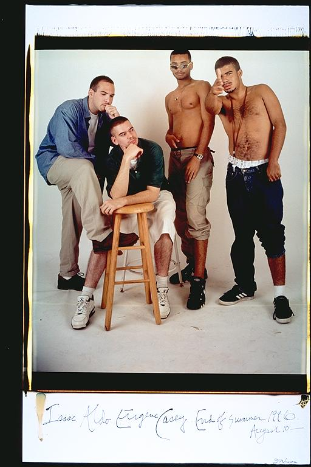

Aldo: This is one picture, we got to fool around a bit. The pictures where we'd fool around were fun, cause at least one person always looked really dumb, blinking or something. At this age, we were all in college, not seeing each other so much, so any time we did a picture was also like a reunion of friends. How silly we acted in the pictures is a reflection of how happy we were to be hanging out, since it had become more of an occasion than a routine.
Casey: I remember this picture kind of vividly. Every picture we take is always so fun and interesting everyone takes turns making up jokes about their friends and being the butt of someone else's jokes. Our picture sessions usually happen after a couple hours of hanging out. Usually everybody tries to make the pictures as interesting as possible without losing our dignity. In this one I'm trying to be as cool and tough, while Eugene has a light playful look contrasting the playful look of Isaac and Aldo. All together it looks that our wacked out ideas and postures turned us into a very demented psuedo-boy band poster.
Eugene: "Buggin Out" -- This is the first picture we took with our shirts off. It shows that we were confident in our manhood, and confortable enough with each other to make fools out of ourselves. I remember thinking that I would try to mimic one of the "sexy posing" R & B groups of the mid-90's. We were definitely buggin' out. Perhaps one of the funniest pictures we've taken.
Isaac: "White guys ponder over shirtless black guys with one leg rolled up." I don't remember the thought process that led to this one. It appears to be some sort of racial/social commentary. I'm sure that was the intention. For some reason, I find Casey's keys dangling down to his waist to be the funniest part. This is probably a good time to look back at one on the earlier pictures and see the change. Blows my mind.
